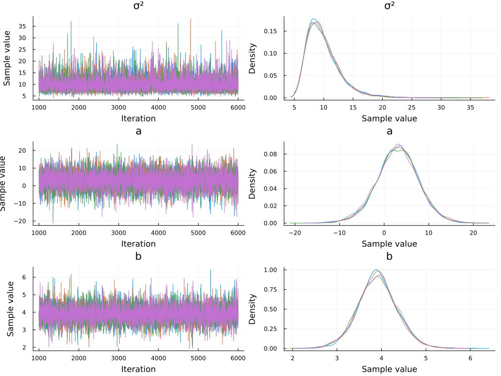
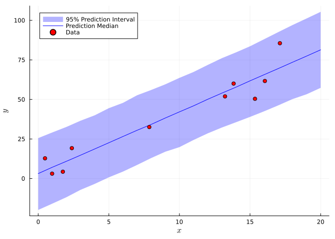

using Turing
using Distributions
using Plots
using LaTeXStrings
using StatsPlots
using StatsBase
using Optim
using RandomTutorial: Markov Chain Monte Carlo With Turing.jl
Overview
This tutorial will give some examples of using Turing.jl and Markov Chain Monte Carlo to sample from posterior distributions.
Setup
As this tutorial involves random number generation, we will set a random seed to ensure reproducibility.
Random.seed!(1);Fitting A Linear Regression Model
Let’s start with a simple example: fitting a linear regression model to simulated data.
Positive Control Tests
Simulating data with a known data-generating process and then trying to obtain the parameters for that process is an important step in any workflow.
Simulating Data
The data-generating process for this example will be: \[ \begin{gather} y = 5 + 4x + \varepsilon \\ \varepsilon \sim \text{Normal}(0, 10), \end{gather} \] where \(\varepsilon\) is so-called “white noise”, which adds stochasticity to the data set. The generated dataset is shown in Figure 1.
# create trend for data
x = rand(Uniform(0, 20), 10)
y = 5 .+ 4 * x
# sample and add noise
ε = rand(Normal(0, 10), 10)
y .+= ε
scatter(x, y, label="Data", xlabel=L"$x$", ylabel=L"$y$", markersize=10, tickfontsize=14, guidefontsize=16, legendfontsize=16)
Model Specification
The statistical model for a standard linear regression problem is \[ \begin{gather} y = a + bx + \varepsilon \\ \varepsilon \sim \text{Normal}(0, \sigma^2). \end{gather} \]
Rearranging, we can rewrite the likelihood function as: \[y \sim \text{Normal}(\mu, \sigma^2),\] where \(\mu = a + bx\). This means that we have three parameters to fit: \(a\), \(b\), and \(\sigma^2\).
Next, we need to select priors on our parameters. We’ll use relatively generic distributions to avoid using the information we have (since we generated the data ourselves), but in practice, we’d want to use any relevant information that we had from our knowledge of the problem. Let’s use relatively diffuse normal distributions for the trend parameters \(a\) and \(b\) and a half-normal distribution (a normal distribution truncated at 0, to only allow positive values) for the variance \(\sigma^2\), as recommended by Gelman (2006).
\[ \begin{gather} a \sim \text{Normal(0, 10)} \\ b \sim \text{Normal(0, 10)} \\ \sigma^2 \sim \text{Half-Normal}(0, 25) \end{gather} \]
Using Turing
Coding the Model
Turing.jl uses the @model macro to specify the model function. We’ll follow the setup in the Turing documentation.
To specify distributions on parameters (and the data, which can be thought of as uncertain parameters in Bayesian statistics), use a tilde ~, and use equals = for transformations (which we don’t have in this case).
@model function linear_regression(x, y)
# set priors
σ² ~ truncated(Normal(0, 25); lower=0)
a ~ Normal(0, 10)
b ~ Normal(0, 10)
# we can specify the likelihood with a loop, as our data is i.i.d.
# we could also rewrite this using linear algebra, which might be more efficient for large and/or complex models or datasets, but this will be more readable in this simple case.
for i = 1:length(y)
# compute the mean value for the data point
μ = a + b * x[i]
y[i] ~ Normal(μ, σ²)
end
endlinear_regression (generic function with 2 methods)Fitting The Model
Now we can call the sampler to draw from the posterior. We’ll use the No-U-Turn sampler, which is a Hamiltonian Monte Carlo algorithm (a different category of MCMC sampler than the Metropolis-Hastings algorithm discussed in class). We’ll also use 4 chains so we can test that the chains are well-mixed, and each chain will be run for 5,000 iterations1
1 Hamiltonian Monte Carlo samplers often need to be run for fewer iterations than Metropolis-Hastings samplers, as the exploratory step uses information about the gradient of the statistical model, versus the random walk of Metropolis-Hastings. The disadvantage is that this gradient information must be available, which is not always the case for simulation models.
chain = let
model = linear_regression(x, y) # create the model object with the data
sampler = NUTS()
n_per_chain = 5000
nchains = 4
# call the sampler and drop the "burn-in/warm-up" portion
sample(model, sampler, MCMCThreads(), n_per_chain, nchains, drop_warmup=true);
end
@show chain┌ Warning: Only a single thread available: MCMC chains are not sampled in parallel
└ @ AbstractMCMC ~/.julia/packages/AbstractMCMC/F9Hbk/src/sample.jl:296┌ Info: Found initial step size
└ ϵ = 0.00625
┌ Info: Found initial step size
└ ϵ = 0.05┌ Info: Found initial step size
└ ϵ = 0.003125
┌ Info: Found initial step size
└ ϵ = 0.0125Sampling (1 threads): 50%|██████████████▌ | ETA: 0:00:01Sampling (1 threads): 100%|█████████████████████████████| Time: 0:00:01chain = MCMC chain (5000×15×4 Array{Float64, 3})Chains MCMC chain (5000×15×4 Array{Float64, 3}):
Iterations = 1001:1:6000
Number of chains = 4
Samples per chain = 5000
Wall duration = 13.99 seconds
Compute duration = 11.88 seconds
parameters = σ², a, b
internals = lp, n_steps, is_accept, acceptance_rate, log_density, hamiltonian_energy, hamiltonian_energy_error, max_hamiltonian_energy_error, tree_depth, numerical_error, step_size, nom_step_size
Summary Statistics
parameters mean std naive_se mcse ess rhat ⋯
Symbol Float64 Float64 Float64 Float64 Float64 Float64 ⋯
σ² 9.9355 2.8951 0.0205 0.0329 8133.9030 1.0008 ⋯
a 3.0112 4.7115 0.0333 0.0495 7709.7148 1.0006 ⋯
b 3.9132 0.4540 0.0032 0.0051 7151.1739 1.0004 ⋯
1 column omitted
Quantiles
parameters 2.5% 25.0% 50.0% 75.0% 97.5%
Symbol Float64 Float64 Float64 Float64 Float64
σ² 6.0219 7.9104 9.3808 11.3350 17.1375
a -6.5339 0.0383 3.0647 6.0833 12.2396
b 3.0253 3.6243 3.9060 4.1948 4.8241
How can we interpret the output? The first parts of the summary statistics are straightforward: we get the mean, standard deviation, and Monte Carlo standard error (mcse) of each parameter. We also get information about the effective sample size (ESS)2 and \(\hat{R}\), which measures the ratio of within-chain variance and across-chain variance as a check for convergence3.
2 The ESS reflects the efficiency of the sampler: this is an estimate of the equivalent number of independent samples; the more correlated the samples, the lower the ESS.
3 The closer \(\hat{R}\) is to 1, the better.
In this case, we can see that we were able to recover the “true” data-generating values of \(\sigma^2 = 10\) and \(b = 4\), but \(a\) is slightly off (the mean is 3, rather than the data-generating value of 5). This isn’t surprising: given the variance of the noise \(\sigma^2\), there are many different intercepts which could fit within that spread.
Let’s now plot the chains for visual inspection.
plot(chain)
We can see from Figure 2 that our chains mixed well and seem to have converged to similar distributions! The traceplots have a “hairy caterpiller” appearance, suggesting relatively little autocorrelation. This aligns with the ESS estimates from the chain output, which are higher than the number of drawn samples4. We can also see how much more uncertainty there is with the intercept \(a\), while the slope \(b\) is much more constrained, with a 95% credible interval of \((3, 4.8)\) (compared to \((-6.5, 12)\) for \(a\)).
4 Which is possible with Hamiltonian Monte Carlo due to the efficiency of exploration!
Another interesting comparison we can make is with the maximum-likelihood estimate (MLE), which we can obtain through optimization.
mle_model = linear_regression(x, y); # specify the model object
optimize(mle_model, MLE())ModeResult with maximized lp of -34.57
3-element Named Vector{Float64}
A │
────┼────────
:σ² │ 7.67781
:a │ 3.76777
:b │ 3.86192The MLE results have some additional error compared to the MCMC means (the slope and noise variance are further from the data-generating values), but this can be a lot faster, at the expense of getting estimates of uncertainty.
Model Diagnostics and Posterior Predictive Checks
One advantage of the Bayesian modeling approach here is that we have access to a generative model, or a model which we can use to generate datasets. This means that we can now use Monte Carlo simulation, sampling from our posteriors, to look at how uncertainty in the parameter estimates propagates through the model. Let’s write a function which gets samples from the MCMC chains and generates datasets.
function mc_predict_regression(x, chain)
# the Array(group()) syntax is more general than we need, but will work if we have multiple variables which were sampled as a group, for example multiple regression coefficients.
a = Array(group(chain, :a))
b = Array(group(chain, :b))
σ² = Array(group(chain, :σ²))
μ = a' .+ x * b'
y = zeros((length(x), length(a)))
for i = 1:length(a)
y[:, i] = rand.(Normal.(μ[:, i], σ²[i]))
end
return y
endmc_predict_regression (generic function with 1 method)Now we can generate a predictive interval and median and compare to the data.
x_pred = 0:20;
y_pred = mc_predict_regression(x_pred, chain)21×20000 Matrix{Float64}:
6.68936 -1.81801 -4.58763 … 14.6356 -0.671331 5.57161
2.46789 7.18889 9.67166 6.15337 -0.285616 13.6276
-19.928 -10.5487 15.1344 -8.11842 0.408939 -4.88305
33.1545 20.7704 10.2623 6.02563 6.57178 7.53745
35.2771 16.3458 8.57409 20.2317 13.3907 4.84027
21.1928 26.1562 36.552 … -0.179761 14.5226 15.3409
40.7311 23.572 41.5141 31.8598 37.1869 27.9604
0.423933 13.9711 28.51 54.575 32.9363 28.5016
62.4813 47.5292 35.4607 37.3601 32.239 30.2444
51.1977 27.8843 34.0011 41.9719 52.8179 46.9838
45.2684 55.6934 37.2417 … 58.5066 45.3842 26.1518
51.8353 38.6125 42.5691 60.4984 50.5223 37.1143
56.3781 56.4842 72.109 70.1629 58.2065 56.5514
73.8257 41.2734 37.0866 52.9339 41.956 50.9942
57.176 47.693 58.0555 88.7714 53.4595 57.0628
87.2446 48.9406 47.6912 … 93.4082 72.0358 58.1304
60.1674 63.2218 67.6798 88.6353 67.5149 67.8642
75.3231 64.1233 62.3664 80.2144 69.696 73.4328
76.9033 73.7972 84.0307 82.2377 79.6178 77.3594
78.2451 64.1439 78.0576 111.722 69.2794 59.0543
76.0979 86.0809 60.8346 … 104.763 91.1638 72.3884Notice the dimension of y_pred: we have 20,000 columns, because we have 4 chains with 5,000 samples each. If we had wanted to subsample (which might be necessary if we had hundreds of thousands or millions of samples), we could have done that within mc_linear_regression before simulation.
# get the boundaries for the 95% prediction interval and the median
y_ci_low = quantile.(eachrow(y_pred), 0.025);
y_ci_hi = quantile.(eachrow(y_pred), 0.975);
y_med = quantile.(eachrow(y_pred), 0.5);Now, let’s plot the prediction interval and median, and compare to the original data.
# plot prediction interval
plot(x_pred, y_ci_low, fillrange=y_ci_hi, xlabel=L"$x$", ylabel=L"$y$", fillalpha=0.3, fillcolor=:blue, label="95% Prediction Interval", legend=:topleft, linealpha=0)
# plot median line
plot!(x_pred, y_med, color=:blue, label="Prediction Median")
scatter!(x, y, color=:red, label="Data")
From Figure 3, it looks like our model might be slightly under-confident, as with 10 data points, we would expect 5% of them (or 1/2 of a “data point”) to be outside the 95% prediction interval. It’s hard to tell with only 10 data points, though! We could resolve this by tightening our priors, but this depends on how much information we used to specify them in the first place. The goal shouldn’t be to hit a specific level of uncertainty, but if there is a sound reason to tighten the priors, we could do so.
Now let’s look at the residuals from the posterior median and the data. The partial autocorrelations plotted in Figure 4 suggest that the residuals aren’t autocorrelated, which supports our modeling assumption that they were independent.
y_pred_data = mc_predict_regression(x, chain)
y_med_data = quantile.(eachrow(y_pred_data), 0.5)
residuals = y_med_data .- y
plot(pacf(residuals, 1:4), line=:stem, marker=:circle, legend=:false, grid=:false, linewidth=2, xlabel="Lag", ylabel="Partial Autocorrelation")
hline!([0], linestyle=:dot, color=:red)